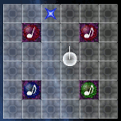
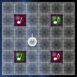
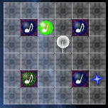

左から8分音符、4分音符、付点4分音符、2分音符。8分音符の長さを1とすると、それぞれの長さは1、2、3、4となる。上段は通常のブロック、下段はノイズブロック。それぞれ赤、緑、青の3色ある。ノイズブロックを規定数消すのがこのゲームの目的。なお、ライフは消さなければならない残りノイズ数を意味する。

ブロックに向かって短くZキーを押すと蹴ることができる。蹴られたブロックは音の長さ（1～4）マスだけまっすぐ進む。壁や他のブロックと衝突すると止まる。

Zキーを押しながら矢印キーを押すと横に蹴ることができる。

Zキーを長押しすると強く蹴ることができる。ブロックは壁や他のブロックに衝突するまで進む。
同じ色、同じ音符のブロックを衝突させるとブロックが爆弾化し、発火が始まる。片方がノイズでも良いが、両方がノイズだとダメ。なお、元々通常ブロックだったかノイズブロックだったかで爆弾の動作が変わることはない。
発火が始まると、次の1小節（普通は8分音符8個分の長さの時間）で爆発予告のSEが流れ、その終了時に爆発する。
爆弾化したブロックを蹴ることもできる。爆発予告中に蹴るとその小節での爆発はキャンセルされ、次の小節まで遅延させることができる。ずっと蹴り続ければいくらでも先延ばしできる。
爆弾化したブロックが爆発すると、上下左右に爆風が広がる。爆風は毎8分音符1マスの速さで、音符の長さのマス数だけ広がる。たとえば8分音符なら1マス、2分音符なら4マスである。
爆風の最終到達地点に同じ色のブロックが存在し、爆風がそこに到達すると、そのブロックが発火し直ちに爆発する。通常ブロックでもノイズブロックでも爆発待ちの爆弾でも良い。爆風が広がる途中ではダメ。誘爆されたブロックも同様に爆風を発するため、うまく配置すれば次々と爆発を連鎖させることができる。
爆風は、広がる途中で同じ色のブロックに当たると消滅してしまう。異なる色なら通り抜ける。通常ブロックかノイズブロックかは関係ない。また、床が無いところは爆風も通れないが、後述する透過グリッドは通過できる。
ただ連鎖を繋げるだけではあまりメリットはないが、以下の機能を利用する場合に長い連鎖が有利になる。
爆風がブロックに誘爆する瞬間にタイミングよくXキーを押すと成立する。ただし、Xブレイクが成立するためには基本的にそれまでのチェインの長さが3マス（付点4分音符）以上でなければならない。例えば付点4分音符単体か、8分から4分に連鎖を繋げれば良い。
Xキーを押すタイミングは所定の範囲内に収まっていれば良く、正確さによって効果が増減することはない。
Xブレイクが成立すると、専用SEが鳴って誘爆されたブロックの周囲のブロックが爆弾化する。爆弾化する範囲はチェインが長いほど広くなる。例えば付点4分の長さであれば3×3の範囲が爆弾化する。誘爆されたブロック自体は消えてしまうので、周囲にブロックが無いと損をする。
チェインの長さが4分音符以下の場合は大した意義のあるXブレイクは起こらない。厳密には1×1のXブレイクが成立すると解釈することができる。すなわち、誘爆されたブロックが出現予告エフェクトと重なっており、爆発直後に新たなブロックが出現する場合にのみ出現したブロックが爆弾化する。
チェインの長さが8以上になった爆発で上下左右斜めの8方向の（離れていてもよい）同色ブロックが発火する。直ちには爆発せず爆発予告を経る。
プレイヤーが通り抜けたりブロックを置いたりすることはできないが、爆風は通り抜けることができる。
普通の音符が付いたノイズブロックと同様、残りライフに数えられ、クリアのためには消さなければならない。任意の色の爆風の終端を当てるかXブレイクに巻き込むことで消せる。蹴ることはできない。爆風が通過することはできない。
一部のステージを除き、絶えずフィールドに通常ブロックが出現する。出現頻度はステージによって異なる。また、残りライフがある限り、ノイズブロックを消すとその分だけ新しくノイズブロックが出現する。
出現予告エフェクトが表示されてしばらく経つとその場所に同じ色の通常またはノイズブロックが出現する。出現予告エフェクトに他のブロックを置いたりプレイヤーが重なることもでき、そのブロックやプレイヤーをどかすまでは出現しない。
ノイズブロックが爆弾化するか、誘爆されて爆発するごとにライフが減る。ライフを0にできればクリア。
制限時間が切れ、現在発火中の爆発が終わってもライフが残っているとゲームオーバー。時間切れになった瞬間に発火していた爆発でライフを0にできればセーフ。ただし、時間切れになってからのプレイヤーの行動はXブレイクに限られる。